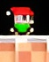

4 ноября 2023 появилась игра платформер - No hardcore. Ее создал один человек (основатель Manul Games) и до создания этой команды. Почему? Сам не знаю. Игра сначала вышла в itch.io, но она там не взлетела. Потом не задолго нового года (23 декабря) она появилась в OpenVK . Там она немного, но стала узнаваемой.